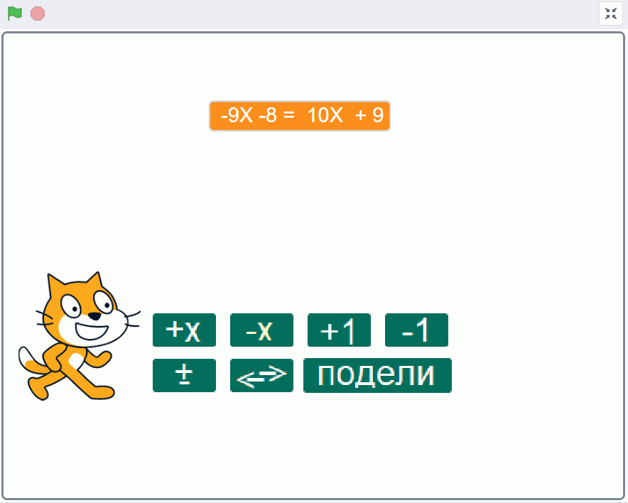
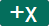
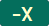
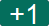
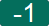
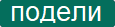
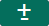

Предлог пројекта - Решавање једначина¶
Мотивација¶
Једначине се појављују у разним предметима, а не само у математици. Ускоро ћеш почети да учиш физику и хемију, у којима ћеш такође често да решаваш једначине. Зато је потребно да добро увежбаш решавање једначина.
Циљ овог пројекта је да направиш Скреч програм, који омогућава вежбање решавања једначина. Чак и ако ти већ добро (брзо и тачно) решаваш једначине, сигурно има твојих другова и другарица, којима је таква вежба потребна.
У почетку се срећеш само са једначинама које изгледају, на пример, овако: \(3 \cdot x - 2 = 7 \cdot x - 4\). Такве једначине се зову линеарне једначине.
Вероватно већ знаш да једначина одређеним поступцима може да се трансформише, тако да нова једначина има иста решења као и претходна. На пример, додавањем или одузимањем исте вредности обема странама једначине добија се нова једначина, равноправна претходној. Исто важи када обе стране једначине помножимо или поделимо неким бројем (различитим од нуле).
Ево како се такве трансформације користе у решавању линеарних једначина:
\(\begin{align} \\ 3 \cdot x - 2 &= 7 \cdot x - 4 && \text{одузмемо на обе стране једначине по 7x и добијемо} \\ 3 \cdot x - 7 \cdot x - 2 &= 7 \cdot x - 7 \cdot x - 4 && \text{средимо} \\ -4 \cdot x - 2 &= - 4 && \text{додамо на обе стране једначине по 2 и добијемо} \\ -4 \cdot x - 2 + 2 &= -4 + 2 && \text{средимо} \\ -4 \cdot x &= - 2 && \text{поделимо обе стране једначине са -4 и добијемо} \\ \tfrac{-4}{-4} \cdot x &= \tfrac{-2}{-4} && \text{средимо} \\ x &= 0.5\\ \end{align}\)
Трансформације вршимо са циљем да се на десној страни једначине ослободимо непознате величине \(X\), а на левој страни да се ослободимо делова без \(X\). Другим речима, желимо да нам сви делови “са иксом” заврше на левој страни, а сви “без икса” на десној. Након тога треба још да поделимо обе стране коефицијентом уз \(X\) и једначина је решена.
Погледај поново претходни пример решавања једначине, имајући у виду циљ трансформисања једначине:
\(\begin{align} \\ 3 \cdot x - 2 &= 7 \cdot x - 4 && \text{ослободимо се x на десној страни, тако што одузмемео са сваке стране једначине по 7x} \\ -4 \cdot x - 2 &= - 4 && \text{ослободимо се двојке на левој страни, тако што додамо на обе стране једначине по 2} \\ -4 \cdot x &= - 2 && \text{ослободимо се коефицијента уз x тако што поделимо обе стране једначине са -4} \\ x &= 0.5\\ \end{align}\)
Сценарио пројекта¶
На позорници треба да се појави једначина и дугмад за њено трансформисање. Корисник програма може кликовима на дугмад да постепено трансформише једначину и тако је решава. Када једначина буде решена, мачак ће да изговори “Браво!”.
{kind=link}
Да би програм био једноставнији, направићемо га тако да су бројеви у тек задатој једначини цели. Захваљујући томе, кориснику је при решавању довољно да на обе стране додаје или одузима по \(X\), или по \(1\). Тиме смо избегли потребу да корисник програма задаје (уноси) бројеве које додаје или одузима од обе стране једначине, па ће му бити удобније да користи програм.
Наравно, једначине са децималним бројевима се решавају у суштини на исти начин као и оне са целим бројевима. Зато ономе ко увежба решавање једначина на овом програму, не би требало да буде тешко да стечену вештину искористи и у једначинама са децималним бројевима.
На основу претходног размишљања, наш предлог за избор дугмади и њихове функције је:
Дугме  додаје по \(X\) на обе стране једначине.
Дугме  одузима по \(X\) од обе стране једначине.
Дугме  додаје по \(1\) на обе стране једначине.
Дугме  одузима по \(1\) од обе стране једначине.
Дугме  дели обе стране једначине коефицијентом уз \(X\) на левој страни (ово дугме треба користити тек у последњем кораку решавања)
Дугме  множи обе стране једначине са \(-1\), тј. мења знак свим бројевима у једначини
{kind=link}
{kind=link}
{kind=link}
{kind=link}
{kind=link}
{kind=link}
{kind=link}
Ево како би отприлике требало да ради Скреч програм:
Анализа и планирање¶
Хајде сада да заједно размислимо како овај пројекат може да се реализује.
Ликови¶
Најзгодније је да свако дугме буде посебан лик. Осим тих ликова, имаћемо и главни лик - мачка, који поставља задатак, прати да ли је једначина решена и честита када јесте.
Костиме ликова је лакше направити ван окружења Скреч. Могуће је, на пример, у програму Бојанка (Paint) откуцати текст сваког дугмета и сачувати га као слику. Те слике касније увозимо из окружења Скреч, било као нове ликове, било као костиме за већ направљене ликове.
Скрипте¶
Најважније скрипте које ће бити потребне су реакције ликова на следеће догађаје:
Када покренемо програм, главни лик на случајан начин бира 4 броја који учествују у једначини и формира текст једначине, који ће бити приказан.
Када кликнемо на неко дугме, тај лик ће да измени вредности 4 броја који се појављују у једначини, у складу са раније описаном функцијом дугмета. Након промене бројева у једначини, потребно је да се поново формира текст једначине.
Пошто видимо да се текст једначине формира у разним ситуацијама, најзгодније је да се формирање текста једначине организује као процедура главног лика (мачка). Ликови - дугмад не могу директно да покрећу процедуру која није њихова, али могу да разгласе поруку да су неки или сви бројеви у једначини промењени (тј. да је једначина трансформисана). На ту поруку ће главни лик лако да реагује позивом процедуре за формирање текста једначине.
Променљиве¶
За сада планирамо да имамо ове променљиве у пројекту:
променљива
уз X лево, која представља број уз \(X\) на левој страни једначине (на слици број -9)променљива
уз X десно, која представља број без \(X\) на левој страни једначине (на слици број -8)променљива
без X лево, која представља број уз \(X\) на десној страни једначине (на слици број 10)променљива
без X десно, која представља број без \(X\) на десној страни једначине (на слици број 9)променљива
текст једначине, која се види на позорници и садржи текст једначине
Када размислимо о томе како се формира текст једначине, примећујемо да се лева и десна страна једначине формирају на веома сличан начин. Зато можемо да уведемо посебну процедуру за формирање једне стране једначине. У том случају главна процедура, која формира цео текст једначине, може једноставније да се запише помоћу два позива ове помоћне процедуре за једну страну. У ту сврху ћемо да уведемо још једну, помоћну променљиву, у коју ће помоћна процедура да упише текст једне стране једначине:
променљива
израз, која садржи текст једне стране једначине након извршења процедуреизраз
{kind=link}
Последњи део процедуре прикажи једначину проверава да ли је једначина решена. Једначина је решена ако на левој страни имамо само \(X\), а на десној само број без \(X\). Другим речима, једначина треба да буде облика \(X = a\), односно \(1 \cdot X + 0 = 0 \cdot X + a\), где је \(a\) било који број. Управо овај услов се проверава на крају процедуре, па ако је он испуњен, мачак честита решавачу на успешно решеној једначини.
Мала помоћ¶
За решавање једначине, дугмад и нису неопходна и могу и да се изоставе из пројекта. Ипак, додавање једног или оба ова дугмета би олакшало кориснику да дође до свог циља - решења једначине.
Ако процењујеш да ти је сувише компликовано да испорограмираш ова два дугмета, направи пројекат без њих. Уколико прихватиш изазов и одлучиш се за ширу верзију пројекта, нудимо ти малу помоћ.
Скрипта која се извршава кликом на дугме могла би да изгледа отприлике овако:
Када је кликнуто на овај лик:
Нека уз_X_лево буде -1 * уз_X_лево
Нека уз_X_десно буде -1 * уз_X_десно
Нека без_X_лево буде -1 * без_X_лево
Нека без_X_десно буде -1 * без_X_десно
Разгласи "Промена"
У скрипти која се извршава кликом на дугме , променљиве уз_X_лево и уз_X_десно треба да међусобно размене вредности. Исто важи и за променљиве без_X_лево и без_X_десно. Размена вредности неке две променљиве, на пример А и Б, може да се обави овако:
Нека Ц буде А
Нека А буде Б
Нека Б буде Ц
при чему је Ц нека трећа променљива. То значи да би скрипта за клик на дугме могла да изгледа овако:
Када је кликнуто на овај лик:
Нека израз буде уз_X_лево
Нека уз_X_лево буде уз_X_десно
Нека уз_X_десно буде израз
Нека израз буде без_X_лево
Нека без_X_лево буде без_X_десно
Нека без_X_десно буде израз
Разгласи "Промена"
Променљиву израз користимо као трећу, помоћну променљиву. Прве три наредбе обављају размену вредности променљивих уз_X_лево и уз_X_десно, а друге три размену вредности променљивих без_X_лево и без_X_десно.
Самоевалуација¶
Када направиш програм, покушај да (пре свега себи) одговориш на ова питања:
Да ли је, по твојој процени, пројекат успешно приведен крају? Колико си ти лично задовољан-задовољна урађеним? Зашто?
Који део је био посебно тежак? Како си га решио-решила? Да ли је постојао неки проблем чијим решавањем се посебно поносиш?
Да ли је било накнадних измена првобитног плана? Због чега?
Да ли је пројекат био користан за стицање или унапређивање неких знања или вештина? Којих?
Размисли шта од овога би било интересантно другима да чују током твог представљања пројекта.